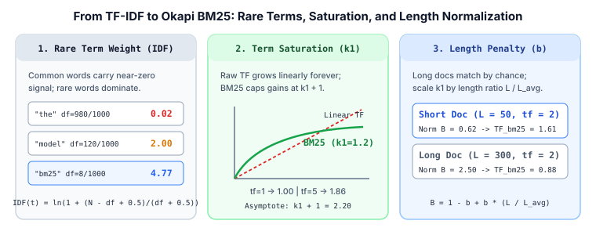

2. From TF-IDF to BM25: Term Saturation ($k_1$) and Document Length Normalization ($b$)
Once an inverted index retrieves the candidate documents that share words with a user's query, we need a fast formula to score and rank them. While classical TF-IDF established the core principle—rewarding repeated query words weighted by their rarity—it suffers from two practical flaws: unbounded linear growth with word repetition and unfair preference for long documents. Okapi BM25 fixes both with two intuitive hyperparameters ($k_1$ and $b$), remaining the gold-standard lexical baseline in modern search engines.

1. Why Raw TF-IDF Breaks Down
Suppose a corpus has $N$ total documents. For any query term $t$ and document $d$, let:
- $\text{tf}(t, d)$ be the term frequency—how many times word $t$ appears in document $d$.
- $\text{df}(t)$ be the document frequency—how many documents in the corpus contain word $t$ at least once.
Classical TF-IDF multiplies the raw count by an inverse document frequency factor:
Despite its simplicity, raw TF-IDF fails on two common edge cases:
- No Term Saturation: A document that repeats the word
"python"$50$ times receives $10\times$ the score of a focused document that mentions"python"$5$ times. On a multi-word query like"python coroutine tutorial", a spammy document repeating"python"$50$ times will easily outrank a document that contains all three query words once. - Length Bias: A $2{,}000$-word article naturally repeats words more often than a $100$-word summary just by chance. Without normalizing for document length, long documents dominate the top results.
2. The Three Components of Okapi BM25
Derived from the Probabilistic Relevance Framework by Robertson et al. (1994), Okapi BM25 (Best Matching 25) replaces unbounded linear term frequency with a saturating, length-normalized curve. Given a query $Q$ made of terms $t_1, t_2, \dots, t_m$, the BM25 score of document $d$ is the sum over all query terms:
Component 1: Smoothed Inverse Document Frequency
Lucene and modern search engines use the non-negative Robertson-Spärck Jones IDF formula:
Adding $1$ inside the logarithm guarantees $\text{IDF}(t) > 0$ even if a stopword like "the" appears in almost every document, while the $+0.5$ terms prevent division by zero.
Component 2: Term Frequency Saturation ($k_1$)
To understand $k_1$, temporarily assume every document has average length ($L_d = L_{\text{avg}}$), so the length factor equals $1$. The term-frequency ratio simplifies to:
- When $\text{tf} = 0$, the score is $0$.
- When $\text{tf} = 1$, the score is $1.0$ regardless of $k_1$.
- As $\text{tf} \to \infty$, the score approaches an upper ceiling of $k_1 + 1$.
Typical values are $k_1 \in [1.2, 1.5]$. A smaller $k_1$ saturates faster (making extra occurrences matter very little), whereas $k_1 \to \infty$ recovers linear TF-IDF.
Component 3: Document Length Normalization ($b$)
Let $L_d$ be the word count of document $d$, and $L_{\text{avg}}$ be the average document length across all $N$ documents. BM25 defines a length penalty multiplier:
- If $b = 0$, length normalization is turned off ($B = 1$).
- If $b = 1$, term frequency is divided strictly by relative document length ($B = L_d / L_{\text{avg}}$).
- In practice, $b = 0.75$ provides a balanced penalty: a document that is $3\times$ longer than average ($L_d / L_{\text{avg}} = 3$) gets $B = 0.25 + 0.75(3) = 2.50$, requiring $2.5\times$ more occurrences of a term to achieve the same score as an average-length document.
3. Step-by-Step Worked Numerical Example
Suppose our corpus has $N = 1{,}000$ documents with average length $L_{\text{avg}} = 100$ words. We use standard defaults $k_1 = 1.2$ and $b = 0.75$. A user searches for the two-word query:
First, we compute the IDF of both query terms:
"bm25"appears in $\text{df} = 8$ documents: $\text{IDF}(\text{"bm25"}) = \ln\!\left(1 + \frac{1000 - 8 + 0.5}{8 + 0.5}\right) = \ln(1 + 116.76) = \mathbf{4.77}$."python"appears in $\text{df} = 150$ documents: $\text{IDF}(\text{"python"}) = \ln\!\left(1 + \frac{1000 - 150 + 0.5}{150 + 0.5}\right) = \ln(1 + 5.65) = \mathbf{1.89}$.
Now let us compare three candidate documents:
- Doc A (Focused tutorial, $L_A = 80$ words): mentions
"bm25"$2$ times and"python"$2$ times. - Doc B (Keyword-stuffed Python page, $L_B = 100$ words): mentions
"bm25"$0$ times and"python"$20$ times. - Doc C (Verbose textbook chapter, $L_C = 300$ words): mentions
"bm25"$2$ times and"python"$2$ times.
| Document | Length $L_d$ | Length Norm $B(d)$ | "bm25" ($\text{IDF}=4.77$) |
"python" ($\text{IDF}=1.89$) |
Raw TF-IDF | BM25 Score |
|---|---|---|---|---|---|---|
| Doc A (Focused) | $80$ | $0.25 + 0.75(0.8) = \mathbf{0.85}$ | $\text{tf}=2 \;\Rightarrow\; 4.77 \times 1.46 = \mathbf{6.96}$ | $\text{tf}=2 \;\Rightarrow\; 1.89 \times 1.46 = \mathbf{2.76}$ | $13.32$ | $9.72$ (Rank 1) |
| Doc C (Verbose) | $300$ | $0.25 + 0.75(3.0) = \mathbf{2.50}$ | $\text{tf}=2 \;\Rightarrow\; 4.77 \times 0.88 = \mathbf{4.20}$ | $\text{tf}=2 \;\Rightarrow\; 1.89 \times 0.88 = \mathbf{1.66}$ | $13.32$ | $5.86$ (Rank 2) |
| Doc B (Spammy) | $100$ | $0.25 + 0.75(1.0) = \mathbf{1.00}$ | $\text{tf}=0 \;\Rightarrow\; \mathbf{0.00}$ | $\text{tf}=20 \;\Rightarrow\; 1.89 \times 2.08 = \mathbf{3.93}$ | $37.80$ | $3.93$ (Rank 3) |
Notice how cleanly BM25 resolves both failure modes:
- Under raw TF-IDF, Doc B wins easily ($37.80$ vs. $13.32$) even though it never mentions
"bm25"at all! Under BM25, repeating"python"$20$ times saturates at $\text{TF}_{\text{BM25}} = \frac{20 \times 2.2}{20 + 1.2} = 2.08$, keeping Doc B in last place ($3.93$). - Doc A and Doc C have identical term counts ($\text{tf}=2$ for both words), so raw TF-IDF ties them at $13.32$. BM25 rewards the concise $80$-word Doc A ($9.72$) over the $300$-word Doc C ($5.86$).
4. Minimal Python Implementation
Below is a self-contained implementation of Okapi BM25 that precomputes IDF and upper-bound term weights (ready for WAND pruning from Chapter 1):
import math
from collections import Counter
class BM25Index:
def __init__(self, docs: list[list[str]], k1: float = 1.2, b: float = 0.75):
self.k1 = k1
self.b = b
self.N = len(docs)
self.doc_lens = [len(d) for d in docs]
self.avgdl = sum(self.doc_lens) / max(self.N, 1)
self.tf = [Counter(d) for d in docs]
df = Counter(term for d in docs for term in set(d))
self.idf = {
t: math.log(1.0 + (self.N - freq + 0.5) / (freq + 0.5))
for t, freq in df.items()
}
def score(self, query: list[str], doc_id: int) -> float:
norm = 1.0 - self.b + self.b * (self.doc_lens[doc_id] / self.avgdl)
total = 0.0
for term in query:
f = self.tf[doc_id].get(term, 0)
if f > 0 and term in self.idf:
tf_sat = (f * (self.k1 + 1.0)) / (f + self.k1 * norm)
total += self.idf[term] * tf_sat
return round(total, 4)
# Verify worked intuition
corpus = [
["bm25", "python"] * 2 + ["word"] * 76, # Doc 0: L=80, tf=2,2
["python"] * 20 + ["word"] * 80, # Doc 1: L=100, tf=0,20
["bm25", "python"] * 2 + ["word"] * 296, # Doc 2: L=300, tf=2,2
]
bm25 = BM25Index(corpus, k1=1.2, b=0.75)
for i in range(3):
print(f"Doc {i}: score = {bm25.score(['bm25', 'python'], i)}")